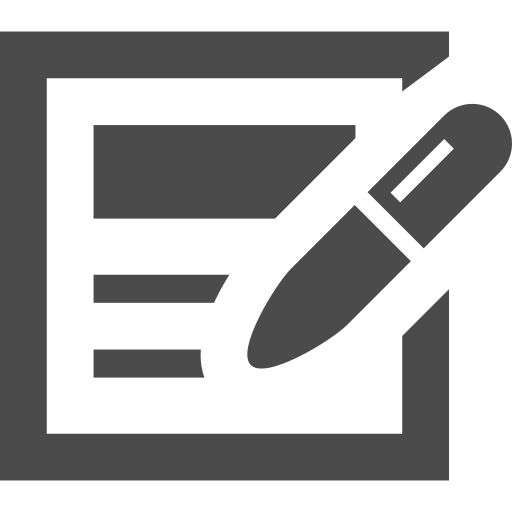
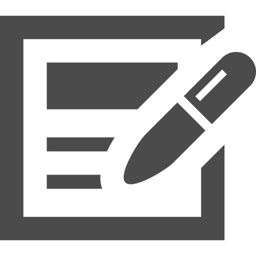

HOME
HOME
 MYINFO
WORK
MYINFO
WORK

-私の能力と経験-
Illustratorを使用した型抜き
この作品は、動物の写る画像から動物のみを型抜きし、黒で塗りつぶして制作しました。ペンツールを使用して、動物の輪郭をなぞり、線を滑らかに整えました。その後、塗りつぶしツールを使用して、動物の部分を黒で塗りつぶしました。 この作品は、動物の特徴を捉えながら、シンプルなデザインに仕上げました。また、黒一色で塗りつぶしたことで、動物の存在感を際立たせました。この作品は、動物をモチーフにしたデザインや、シンプルなデザインが好きな方におすすめです。 制作時間は約3時間です。約１時間デザイン案を煮詰め、ペンツールを使用して、一つの作品の動物の輪郭をなぞるのに約5-10分かかりました。 左の画像はそのうちの１作品になります。
Illustratorを使用した可視光線ポスター
この作品は、可視光線をテーマにしたものです。可視光線とは、私たちが肉眼で見える光のことです。この作品では、ライトと目を使用して、可視光線を目に見える形で表現しています。 これらの作品は、作業時間約2時間で制作されました。文字を少なくすることで、より多くの人に、視界に入れた時にすぐ可視光線とはこんなものなんだとわかるような作品を楽しんでいただけるようにしました。
Illustratorを使用したロゴ
私は、イニシャルを別のものに見せるよう努力したロゴマークのポートフォリオを作成しました。イニシャルを単なる文字としてではなく、ブランドのアイデンティティを表現するものとして捉え、デザインしました。 ロゴマークは、ブランドの顔です。ブランドの価値やメッセージを視覚的に伝える役割を果たします。そのため、このロゴマークは、文字通り顔をイメージして作りました。
Illustratorを使用した加法混色ポスター
この作品は、スポットライトを意識して作りました。スポットライトは、光の強度が強く、照射範囲が狭い光です。この作品では、スポットライトをあたえたような明暗の差を表現するために、加法混色の技法を使用しました。 加法混色とは、赤、緑、青の3原色を混ぜ合わせることで、明るい色を作る技法です。この作品では、赤、緑、青の3色のLEDを組み合わせて、スポットライトのような明暗の差を表現しました。 この作品を通して、スポットライトの明暗の差を表現する方法について学びました。また、加法混色の技法を使って、より明るい色を表現する方法についても学びました。
Illustratorを使用した減法混色ポスター
この作品は、筆を意識して作りました。筆は、絵を描くための道具ですが、それだけでなく、文字を書いたり、線を引いたり、色を塗ったりと、様々な用途に使うことができます。この作品では、筆の多様な用途を表現するために、減法混色の技法を使用しました。 減法混色とは、赤、緑、青の3原色を混ぜ合わせることで、暗い色を作る技法です。この作品では、赤、緑、青の3色の色を組み合わせて、筆の線や文字を表現しました。
Illustratorを使用したコンペ応募
福井桜マラソンのロゴマークのコンペに応募したこの作品は、桜の花びらをモチーフにしたものです。桜は、春の訪れを告げる花です。また、福井桜マラソンは、福井県を象徴するイベントです。 ロゴマークの色は、桜の花びらの色をイメージしたピンクを採用しました。ピンクは優しさや華やかさを表現しています。ロゴマークの形は、桜の花びらが舞い散っている様子を表現しています。 このロゴマークは、福井桜マラソンの開催を多くの人に知らせ、多くの人が参加するイベントになることを願ってデザインしました。
音MAD
この音MADは、私が好きなものを詰め込んだ作品です。好きなアニメ、ゲーム、歌、曲など、様々な要素を組み合わせて作りました。 音MADを作る中で、一番こだわったのは、曲と映像のシンクロです。曲のテンポや曲調に合わせて、映像を編集しました。また、映像に動きを加えて、より面白くしました。 この音MADは、私が好きなものを詰め込んだ作品です。また、音MADを作る楽しさを表現した作品です。
マグロのCG作品
魚が泳ぐCGの作品です。AEを使用して編集をしました。魚の動きにこだわって作りました。制作期間は一ヶ月ほどで、Mayaを使用したCGのモデリングとアニメーションに三週間ほど時間をかけ、編集に一週間ほど時間をかけました。
This web site
このwebサイトは
ポートフォリオの一つです。
どうでしたでしょうか